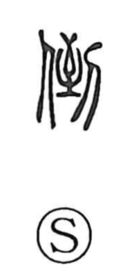

倒

Uncategorized
Kun: taoreru, taosu | On: tou
to fall over ・ to topple ・ to knock down ・ to invert
Explanation
Shirakawa treats 倒 as a phono-semantic character. The phonetic is 到 (tou), whose ancient image shows a person coming to the spot an arrow has reached—arrival. With the person element 亻 added, 倒 depicts a figure turning back from that point, giving the core sense of reversal or being upside down. From this idea of inversion arise the concrete meanings “to knock something down, to throw it over” and, intransitively, “to fall over.”